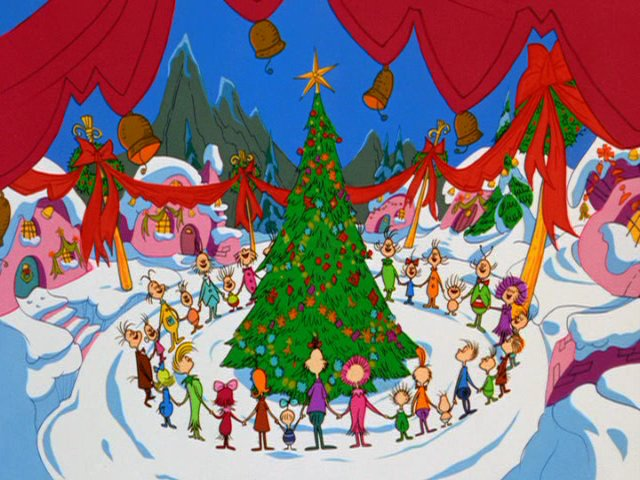
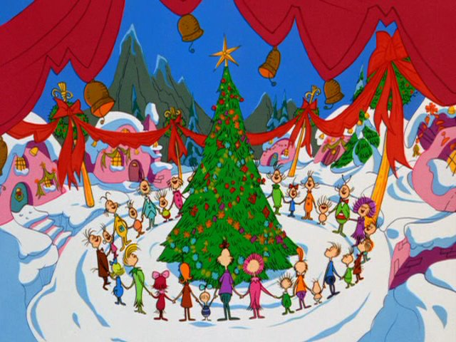

Christmas Has Become Too Object Oriented
No matter what you say or what you do, you can't
stop thinking about what you are going to get for Christmas. I believe
that the Holiday season has become too object oriented. The average family
spends one thousand dollars a year on christmas gifts. Expectations pressure
you into buying gifts for other people, even if you don't know them that well.


I found myself in a position where i felt obligated to participate in a Secret Santa event. The more I think about the concept of Secret Santa, the more meaningless it is. You draw names out of a hat for someone that you barely know, then get them a meaningless gift, because you can't think of what they would possibly like.
I believe that the concept of needing to receive to
give to others is ridiculous. If we need items to bring us together then
there is no point to being together. The holiday season isn't about tangible
item, but the intangible like love, family, fellowship and maybe drinking
some eggnog. I urge everyone to not focus on presents, but to take some
time about what their friends and family mean to them this holiday season.